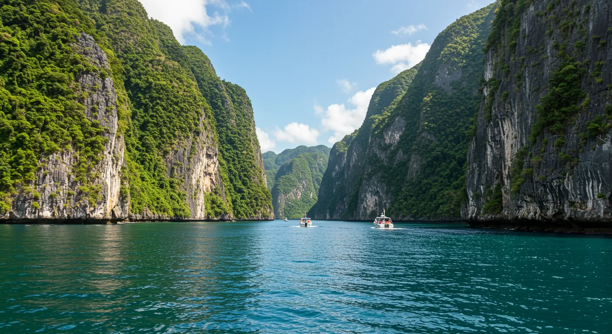
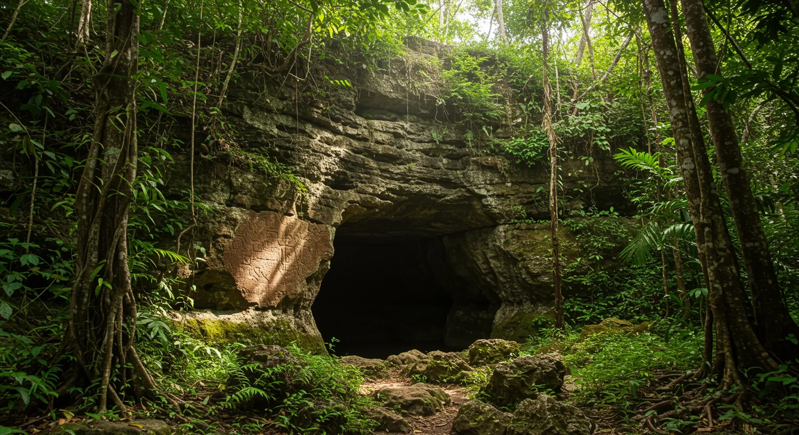
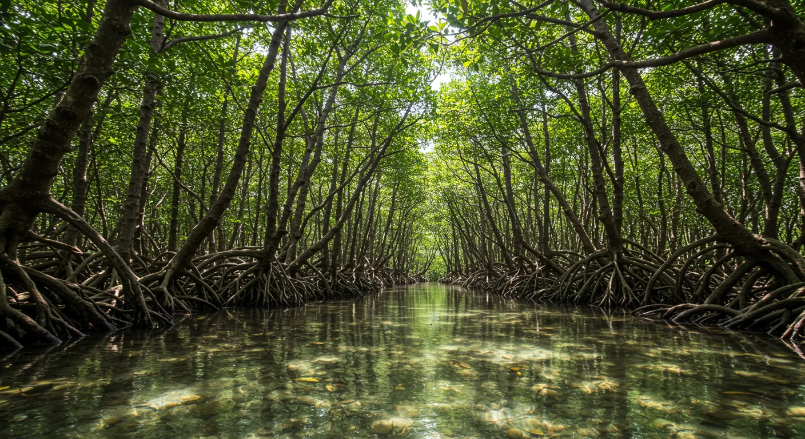
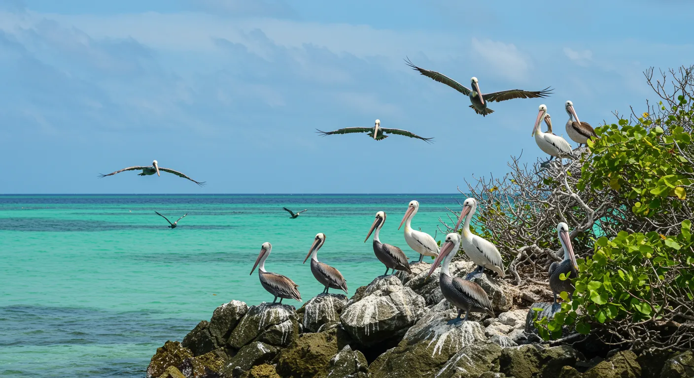

Excursión Parque Nacional Los Haitises
Un viaje a través de la historia y la naturaleza virgen de Samaná

Descripción del Tour
Descubre la magia del Parque Nacional Los Haitises, una joya natural y cultural de la República Dominicana. Navega en bote a través de sus impresionantes formaciones rocosas (mogotes) que emergen del agua, rodeadas de exuberantes manglares.
Explora antiguas cuevas adornadas con pictografías y petroglifos taínos, testigos silenciosos de los primeros habitantes de la isla. Admira la rica biodiversidad del parque, hogar de numerosas especies de aves, incluyendo pelícanos, fragatas y garzas. Una experiencia fascinante para los amantes de la naturaleza, la historia y la fotografía.
Itinerario
- 8:00 AM: Recogida en tu hotel en Las Terrenas.
- 9:00 AM: Llegada al muelle y embarque.
- 9:15 AM: Inicio de la navegación por la Bahía de Samaná hacia Los Haitises.
- 10:00 AM: Exploración de los manglares y visita a la Isla de los Pájaros.
- 10:45 AM: Visita a la Cueva de la Línea (con pictografías taínas).
- 11:30 AM: Visita a la Cueva de la Arena.
- 12:15 PM: Navegación de regreso.
- 1:00 PM: Almuerzo (puede ser en Cayo Levantado o un restaurante local, especifica tu opción).
- 2:30 PM: Tiempo libre (si aplica, ej. en Cayo Levantado).
- 3:30 PM: Regreso hacia Las Terrenas.
- 4:30 PM: Llegada aproximada a tu hotel.
Galería de Fotos


